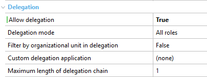

This is a group of properties which allows you to enable the task delegation mechanism. You can find them by going to a user tasks' properties (f4), under the node Advanced Properties> Delegation:  Note: The last four properties are only available when the Allow Delegation Property=True.
|
| Backlinks |
| Interactive Activity Properties |